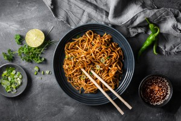

Ramen

Ingredients You’ll Need For This Recipe
It’s short one! It wouldn’t be easy homemade ramen without it.
- Ramen noodles
- Garlic and ginger
- Broth (chicken or veg)
- Dried shiitake mushrooms
- Veggies like carrots or kale
- All your favorite toppings like some egg, chili oil, etc.
Now let’s get cooking!
How To Make Delicious Homemade Ramen
- Stir-Fry Aromatics: Garlic and ginger, what a delicious duo. This is where the flavor is, friends
- Make Your (Easy!) Broth:Add some chicken broth and dried shiitake mushrooms for some umami punch.
- Add Noodles:Cook your noodles right in the broth with some scallions (more flavor, please!).
- Add Veg:Thinly sliced kale, shredded carrots, whatever you’d like! Cook until just tender.
- Top It Off:Add some soft-boiled egg, chili oil, hot sauce, sesame oil, and/or soy sauce, whatever your heart desires.